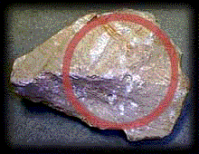

Volcanoes have been a part of earth's history long before humans. Compare the history of human beings, a few million years in the making, to that of the Earth, over four billion years in the making. Volcanoes were important contributors to the early earth atmosphere by releasing gases such as nitrogen (N2), carbon dioxide (CO2), and ammonia (NH4).
| Eruption | Date | Volume in km3 | |
|---|---|---|---|
|
eruptions observed by humans |
Paricutin, Mexico | 1943 | 1.3 |
| Mt. Vesuvius, Italy | 79 A.D. | 3 | |
| Mount St. Helens, Washington |
1980 | 4 | |
| Krakatoa, Indonesia | 1883 | 18 | |
|
inferred by study of deposits |
Long Valley, California | pre-historic | >450 & <700 |
| Yellowstone, Wyoming | pre-historic | 400 |
Note that volcanic eruptions that occurred before historic times were several orders of magnitude larger (more than 1000 km3 in erupted volume) than ones observed by humans.
Pumice is one kind of rock formed by volcanic eruptions  that are very explosive. Hot, frothy volcanic magma quickly cools, leaving a structure of many twisted air holes inside. Pumice is thus very light weight.
If you move your mouse over the image, you can see how pumice looks under the microscope.
A thin section is a layer of the rock cut so thin that the light from a microscope shines through, allowing us to see the structure of the rock.
The twisted chambers here represent the air pockets preserved inside the rock when this rock blew out of a volcano.
To see a more detailed view of volcanic rocks, try our Volcanic Rock Microscope (requires Java)